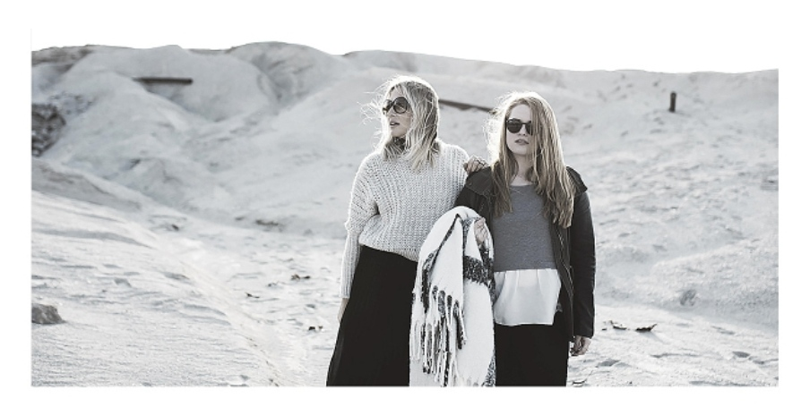
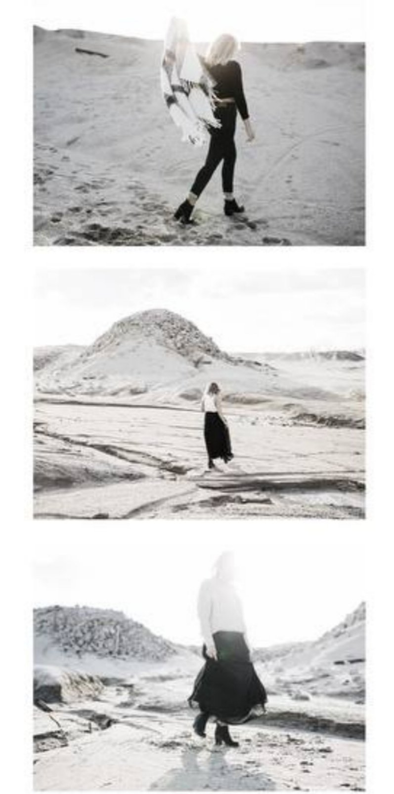
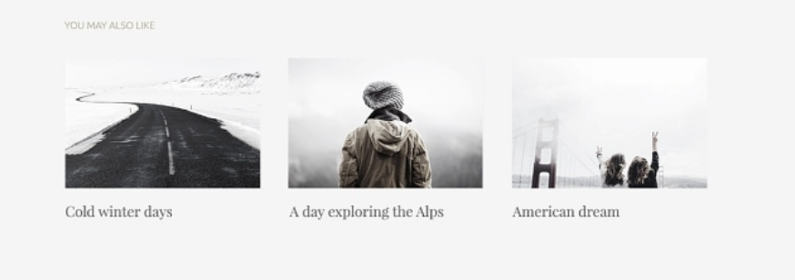

Lifestyle Photodlant Music Travel
Կուզեի, որ մեր լեզուներն ապակուց լինեին, որ չափազանց զգույշ խոսեինք: Ու հենց վիրավորեինք մեկին՝ լեզուն ճաքեր: Ու եթե մեր խոսքերը սիրունությունից ավելի ցածր հնչեին, թող լեզուները մի օր փշրվեին: Կամ էլ թող լեզուները ծաղիկի թերթիկներ լինեին, այնքան թափանցիկ, որ բերաններս բացեինք միայն այն ժամանակ, երբ լռությունից ավելի սիրուն ու կարեւոր բաներ ունենայինք ասելու: Ոչ թե քիչ խոսեինք, այլ շատ ասեինք: Հակառակ դեպքում թող թերթիկները չորանային ու թափվեին: Քաղաքն իր՝ իսկական կյանքից տարբեր դրվագներով իմ ամենասիրելի կինոն է: Բացօթյա սրճարանում նստած տղան արեւից կկոծում է աչքերն ու բարձր ծիծաղում՝ վառելով ծխախոտն ու կրակայրիչը դնելով սեղանին, սուրճի բաժակի ու իր արեւային ակնոցների կողքը: Նա ոչինչ չի ասում, միայն ծիծաղում է, իր դիմացը նստած աղջիկն էլ շնչակտուր ինչ-որ բան է պատմում, երկու ձեռքերը օդի մեջ շարժում՝ օգնելով բառերին ավելի արտահայտիչ դառնալ: Արեւն էլ ավելի է բացացնում աղջկա ոսկեգույն մազերի երանգը, ու խիտ խուճուճների միջով անցնելով՝ հասնում է տղայի վերնաշապիկի վրայի պատկերին: Նրանց սեղանի մոտով մի կին է անցնում. մոտ հիսուն տարեկան է, հագին բաց կապույտ վերնաշապիկ ու ջինսե կիսաշրջազգեստ: Կարեւորը «ամենաթրենդային» ծղոտե գլխարկն է կրում՝զարդարված վերնաշապիկի գույնի արհեստական ծաղիկներով: Արագ քայլերը չեն խանգարում նրան թարս հայացք նետել բարձր ծիծաղող տղայի վրա: Ու կապ չունի, որ կինը ուրիշ կողմ է նայում, նրա դիմացով անցնող երեխայի մաման է մեղավոր, որ նա խփվում է փոքրիկին ու նյարդայնանում՝ հասցնելով այս անգամ թարս հայացք նետել դեպի փոքրիկի մայրիկը:
Նայում ենք լուսնին ու չենք տեսնում հակառակ կողմը, երբ տեսնում ենք մարդուն, երբեք չենք մտածում, ի՞նչ տեսք ունեն իր ոտքի մատները, չբացած «Ջերմուկի» շշի մեջ պղպջակները չենք նկատում, երբեք չենք մտածում, թե հավաքված անկողնու վրա գցած սավանի տակ ինչպե՞ս են «պառկած» բարձերը, չենք հասկանում որտե՞ղ են թաքնվում թռչունները մինչ առավոտյան ծլվլոցը: Չենք մտածում, թե լարերի միջով ո՞նց են հոսում ու ականջակալների մեջ հասնում երգերը, երբեք չենք իմանում, էլ ու՞մ մազերի մեջ են պարել մեր մազերում զբոսնող քամիները:Անդադար խոսում ենք լույսից, բայց վախենում ենք փոխել մեր մութ սենյակի վառված լամպը: Քննադատում ենք քննադատողներին, որովհետեւ քննադատելը սխալ է: Երազում ենք, բայց միանգամից փախնում հենց իրականացման պահին, որովհետեւ վախենում ենք, որ այն կիրականանա մենք էլ առանց երազանք կմնանք: Իսկ հետո նորից նույն բանի մասին ենք երազում, կարեւորն էլ ավելի ուժեղ տառապելով ու մեղադրելով, որ կյանքը անարդար է: Մենք փակում ենք մեր զգացմունքները, ավելի լավ է խեղդվենք դրանցում, քան ասենք ամեն ինչ ոնց կա ու նորերի համար տեղ ազատենք:
